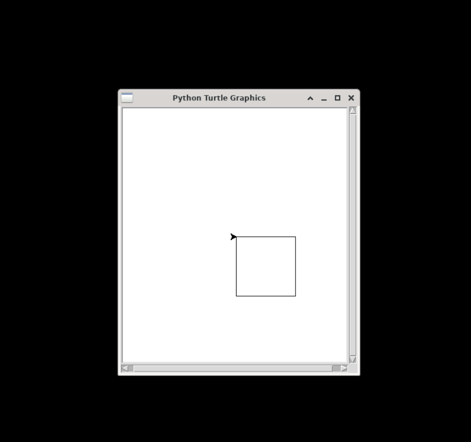
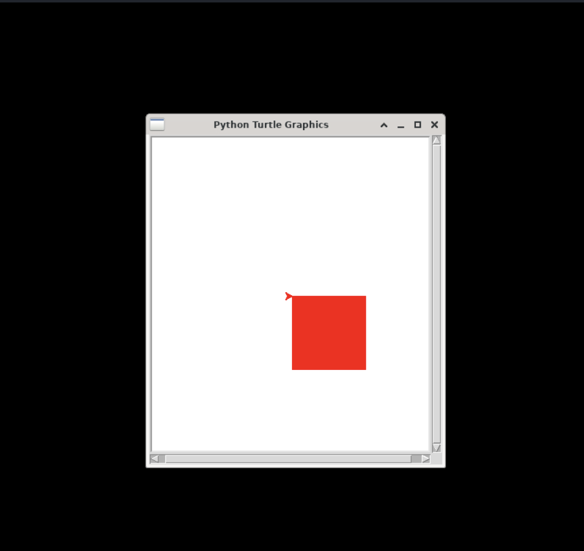

turtle — Turtle Graphic Library
The turtle library is a popular library for drawing simple graphics.
Quick Examples
1, Draw a square
from turtle import *
t = Turtle()
for i in range(4):
t.forward(100)
t.right(90)
done()
Please note that you must call the done() function at the end, otherwise the drawing window will be closed automatically after drawing and you may not be able to see the drawings.
Copy the above code to Python3 editor in OYOclass, then click "Run", you will see the running result like fhe following:

2, Draw with a filled color
from turtle import *
t = Turtle()
t.color("red")
t.begin_fill()
for i in range(4):
t.forward(100)
t.right(90)
t.end_fill()
done()
Copy the above code to Python3 editor in OYOclass, then click "Run", you will see the running result like fhe following:

Reference
- https://docs.python.org/3/library/turtle.html